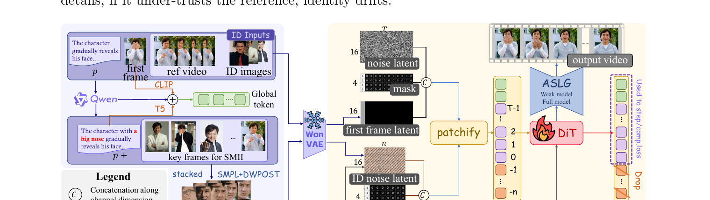
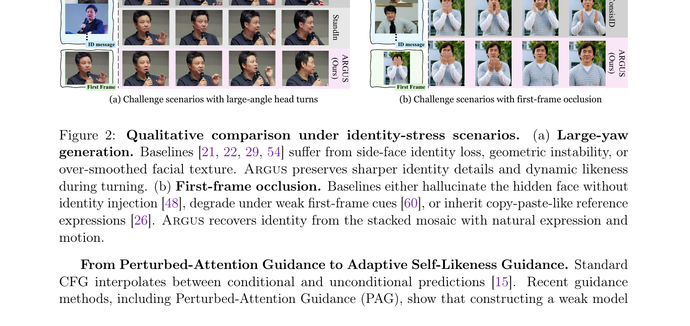
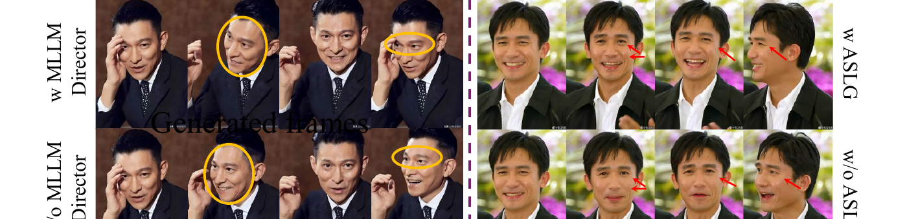

Argus: Stacked Multi-View Identity Mosaic Injection for Subject-Preserving Video Generation
关于代码：截至本文，论文未提供官方代码仓库（arxiv 摘要页、正文、Papers-with-Code、GitHub 搜索均无）。正文多处指向 Appendix A–H 的实现细节。本文基于论文 + 公式 + 图精读，§4 的实现细节引用论文章节/公式而非
repo:Lnn——这是一篇快手的工业论文，代码大概率暂未开源。

1. 出发点 (Motivation)
主体保持视频生成的目标，不只是"生成一段真实的视频"，而是让视频里的人始终是同一个人，同时还要听 prompt、尊重首帧。难点集中在：大角度转头（large yaw）、表情变化、部分遮挡、小脸、配饰、光照漂移，以及"文本 / 首帧 / 身份参考"三者打架。
论文一针见血地指出瓶颈：现有方法把身份当成"点参考"（point reference）——用一张（或几张）参考图通过 adapter / token 拼接 / 受限注意力注入。但一张图不可避免地把"这个人是谁"和"他这一帧恰好的样子"（姿态、表情、眼镜、发型、背景、裁剪、相机风格）纠缠在一起：
模型若过度信任参考图 → 照抄 nuisance 细节（连背景配饰一起复制）；若信任不足 → 身份漂移。
ARGUS 的核心洞察：人脸身份不是一个点，而是一个分布。我们认出一个熟人，靠的不只是正脸几何，还有侧脸轮廓、面部不对称、习惯表情、微动作，以及"在各种条件下保持一致"这件事本身。所以目标应该从"静态相似（static resemblance）"转向"动态神似（dynamic likeness）"——不要让模型去匹配一张干净图，而要喂给它紧凑、多样、且把 nuisance 随机化掉的身份证据。
这就引出两个设计原则，构成全文方法骨架：
- 把身份变成扩散同步的动态记忆（SMII），而不是外挂 adapter 或单张参考图；
- 可扩展的身份监督不必依赖跨配对视频——用同片段/同身份 + 强反事实增广，逼模型只认"身份不变量"。
2. 方法 (Method)
ARGUS 基于 Wan 2.1（14B DiT，Flow Matching 训练）。先回顾 Wan 的 I2V 接口：3D VAE 把视频编码成 \(z_0^v\)，加噪样本 \(z_t^v=(1-\sigma_t)z_0^v+\sigma_t\epsilon^v\)（\(\sigma_t=t/1000\)），再拼成 36 通道张量 \(\Phi_t^v=[z_t^v \parallel m^v \parallel y^v]\)（噪声 latent + 时序 mask + 干净条件帧），过 3D patch embedding 进 DiT。ARGUS 的所有巧思，都是为了让"身份流"和这个 \(\Phi_t^v\) 分布对齐，从而复用 Wan 的原生接口而非外挂新模块。
2.1 身份导演：MLLM 当"感知前端"挑证据
不是花哨的加字幕，而是给下游注入器编译最佳证据。用冻结的 Qwen3-VL，对每个候选帧/片段 \(j\) 估计视角覆盖、表情强度、运动信息量、尺度稳定性、光照多样性、可见性、nuisance 风险，打分：
—— 翻译：给每个候选身份帧打一个加权分——视角/表情/运动/尺度/光照/可见性越丰富越加分，nuisance（背景杂物、遮挡风险等干扰）越多越减分。目的是挑出"对认人有用"的帧。
但关键不是选 top-9，而是选一个"多样"的集合（否则会选出 9 张几乎一样的正脸）：
—— 翻译：在所有候选里挑 9 张，使得（a）它们在各身份维度上的方差大（覆盖偏航/表情/尺度/光照/遮挡等不同情况），（b）总分高，（c）彼此冗余小。一句话：要"多样且互补"的 9 张，不要 9 张近乎重复的正脸。
导演还输出：一段强调稳定面部结构的身份 caption（把 prompt 改写成 \(p^+\)）；一个冲突图，强制优先级 首帧布局 ≻ 文本语义 ≻ 身份参考（身份不能覆盖首帧硬几何）；以及一个全局身份向量 \(h_D\)。文本侧条件拼接为 \(C_{txt}=[e_p \parallel e_I \parallel e_D]\)（T5 文本、CLIP 首帧、投影后的身份描述），残差门满足 \(g_I\ge g_p\ge g_D\) 以保住优先级（论文 Eq. 4–5）。
2.2 SMII：扩散同步的身份张量化（核心）
身份用 \(3\times3\) 马赛克（\(C=9\) 格，每格可以是静态图或短微片段），堆成一段短"身份视频" \(G^{id}\in\mathbb{R}^{3\times n\times H_{id}\times W_{id}}\)（\(n\) 是 VAE 时间压缩后的身份时槽数）。关键一步：身份不是以干净 token 注入，而是和目标视频走同一条 Flow Matching 路径：
—— 翻译：用和主视频"同一个噪声水平 $\sigma_t$"去给身份 latent 加噪（而不是塞一张干净图）。全 1 的 mask 表示"每个身份 token 都是已知参考"。推理时每一步都按当前 $\sigma_t$ 重建前 16 通道——让身份流的噪声水平始终和视频流同步。
因为 \(\Phi_t^{id}\) 和 \(\Phi_t^v\) 通道语义完全相同，可以直接复用 Wan 原生的 patch embedding，把两者拼成一条序列 \(X_t=[X_t^{id}\parallel X_t^v]\)。这一步消除了"干净参考 token 拼接"带来的分布失配（support mismatch），也省掉了额外的 cross-attention adapter——这是 SMII 区别于一切"外挂式"身份注入的本质。消融里，把 SMII 换成朴素 token 拼接，总分掉 10.52；用干净（不加噪）身份 token，掉 7.66。
2.3 负时间 + 只读：身份是"前置记忆"，不是"未来帧"
身份 token 不是要生成的视频帧，所以给它们负时间坐标：
—— 翻译：视频帧时间是 0,1,2,…；身份 token 放在 -1,-2,…,-n 这些"负时间"上。$n=1$ 时就是一张静态身份马赛克挂在 -1 时刻；$n>1$ 时身份变成一段"视频开始前的微历史"。空间上把马赛克和首帧 latent 网格中心对齐（Eq. 9）。在 3D RoPE 下，身份离首帧足够近能被读到，但位置上和生成内容分开。
再用块注意力 mask 强制"只读"——身份只能看身份，视频能看身份+视频：
—— 翻译：左下/右下两块是 0（视频 query 可读身份和视频）；右上是 $-\infty$（身份 query 读不到视频）。这样生成内容就不会"污染"身份记忆本身——参考永远是干净的参考。
2.4 TIA：只在"中段"读身份
早期去噪定全局布局，后期去噪修纹理。身份注入若全程均匀，会"早期压垮布局 / 后期过度锐化人脸"。Temporal Identity Annealing 用一个中段窗口门控 video→id 注意力：
—— 翻译：两个 sigmoid 相乘形成一个"中间高、两头低"的窗口。只有当噪声水平 $\sigma_t$ 落在 $[\sigma_{lo},\sigma_{hi}]$ 的结构生成中段时，身份注意力强度 $\lambda$ 才打开。早期（定布局）和晚期（修纹理）都把身份读弱，避免抢戏。
2.5 无配对反事实训练 + ASLG
训练故意简单：身份格子从同一片段/同一身份采样，再强增广（背景替换、配饰扰动、前景随机化、色彩/模糊/压缩、发型/眼镜/帽子插入……除了稳定面部区域，其它都能随机化；高层语义反事实用 Nano-Banana-2 配人脸保护 mask）。从不要求"同人不同条件"的配对视频。损失就是 Wan 原始 Flow Matching loss，只作用在主视频 token 上：
—— 翻译：标准 flow-matching 速度回归——让模型预测的速度 $\hat u$ 逼近真值速度（噪声减干净 latent）。没有人脸分类损失、没有身份重建损失、没有跨配对监督。身份不变性靠的是"增广让 nuisance 随机、身份不变"——依赖 nuisance 的预测器跨增广视图会不稳，只有认身份不变量的预测器才稳定（Eq. 14）。
消融惊人：把这套反事实增广换成 2K 真实跨配对样本，总分反而掉 5.76——"大规模 nuisance 随机化"比"原始配对"是更强的信号。这呼应了 oftsr-2024 之外的另一条数据哲学：合成扰动 > 稀缺真配对。
推理端 ASLG（Adaptive Self-Likeness Guidance） 把文本引导和身份引导分开。它训练一个 <1% 参数的 mask 网络 \(\phi_\eta\) 学"该弱化哪些 block"得到弱模型 \(u_\theta^\omega\)，然后算三个速度并自校准：
—— 翻译：$u_{++}$ 是"有文本有身份"的预测，$u_{-T}$ 去掉文本，$u_{-I}$ 用黑马赛克去掉身份。最终速度 = 基准 + 文本 CFG 项 + 身份引导项；身份项强度 $\rho_t$ 自动按"文本引导的局部尺度"标定（文本拽得猛时身份也跟上），避免身份引导忽强忽弱。身份的 null 分支用"黑马赛克"而非 None，保持序列长度并匹配训练时的 drop 分布。
3. 结论 (Key findings)

- OpenS2V-Eval Human-Domain SOTA：Total 64.38（超最强基线 +4.18）、FaceSim 71.86（+4.55）、NexusScore 51.62（+4.41）、NaturalScore 79.14、Aesthetics 54.06——除原始 Motion 略低于 Jimeng 外全面第一。注意它击败了闭源系统 Hailuo (60.20) / Jimeng (59.13)。
- HardID-Celeb（自建公众人物压力基准）：FaceSim 76.80（+6.70）、YawScore 70.80（+12.60）、OccScore 64.20（+15.10）——大偏航和首帧遮挡这两个"身份最易漂移"的场景上提升最猛，说明 ARGUS 是真从马赛克里恢复身份，而非照抄首帧可见线索。
- 消融逐项验证（Table 3，去掉某件→总分变化）：朴素 token 拼接 −10.52、干净身份 token −7.66、2K 跨配对换增广 −5.76、去负时间 −5.50、去只读记忆 −5.17、去 TIA −4.35、去身份导演（随机选格）−4.27、去 ASLG −3.22、去文本侧身份条件 −3.02。SMII 的"扩散同步 + 负时间只读"是收益大头。
- 新评测工具：HardID-Celeb 用公众人物（认人判断更敏感、更适合人评）+ YawScore / OccScore 两个鲁棒性指标。

4. 实现细节 (Implementation notes)
⚠️ 无开源代码，以下细节引用论文章节/公式/附录，非
repo:Lnn。
- 基座是 Wan 2.1（14B DiT），3D VAE + Flow Matching，三条独立 1D RoPE（时/高/宽，轴拆分见 Eq. 1：\(d_f=d-2\lfloor d/3\rfloor,\ d_h=d_w=\lfloor d/3\rfloor\)）。ARGUS 不改基座接口，只加一条与 \(\Phi_t^v\) 同构的 36 通道身份流（§3.1, §3.4）。
- 身份流"每步重噪"：推理时身份张量 \(\Phi_t^{id}\) 的前 16 通道在每个 solver step 按当前 \(\sigma_t\) 重新加噪，而非保持干净 \(z_0^{id}\)（§3.4）。这是 SMII 能复用 Wan patch-embedding 先验的前提，容易实现错（若只在 t=0 噪一次就退化成"干净 token"，掉 7.66 分）。
- 身份导演是冻结 Qwen3-VL（§3.3），用分层"审议模板"（完整版在 Appendix B），输出动态证据 + 身份 caption + 冲突图 + 全局向量 \(h_D\)。框/掩码用全身姿态、人体运动恢复、开集检测、视频分割工具精修（YOLO-World 等，引用 [3,30,43,45,55]）。
- 马赛克几何固定 \(3\times3=9\) 格，每格可为静态图或短微片段；\(n\) 为 VAE 时间压缩后的身份时槽数；\(n=1\) 退化为静态马赛克（§3.4，几何/格数/微片段长度消融在 Appendix C）。
- 高层语义反事实增广用 Nano-Banana-2（带人脸保护 mask），低层扰动在线施加；"除稳定面部区域外皆可随机"（§3.4，完整增广分类在 Appendix D）。这是个外部闭源 API 依赖。
- null 身份用"黑马赛克"而非 None（§3.5, Eq. 18）：以概率 \(p_{null}\) 在训练时把马赛克替换成同形状黑图，训练出"定长身份-null 条件"，推理时 ASLG 的 \(u_{-I}\) 分支复用它以保持序列长度、匹配 drop 分布。
- ASLG mask 网络 <1% 主干参数（§3.5, Eq. 16–17），用"求散度但受保真约束"的 KL 目标训练弱模型，防止弱分支塌成无关模型。TIA 既可在注意力层实现（Eq. 11–13），也可等价地在张量层用 \(\Phi_t^{id}\leftarrow\alpha(\sigma_t)\Phi_t^{id}+(1-\alpha(\sigma_t))\Phi^\varnothing\) 实现（Eq. 21）。
- 未见 paper-vs-code 矛盾（因无代码）；但多处关键实现（导演模板、增广清单、ASLG 拉格朗日形式、马赛克几何）都甩给 Appendix，正文不自足，复现门槛高。
5. 批判性总结 (Critical assessment)
Strengths
- 问题诊断准、方案优雅："身份是分布不是点"这个 reframing 直击 point-reference 范式的要害；SMII 用"扩散同步 + 通道同构"把身份注入做成 Wan 原生 token，避免 adapter/拼接的分布失配，是很干净的架构思想。
- 负时间只读记忆是亮点：用 RoPE 负坐标 + 块注意力 mask，让身份"近到能读、又不被生成内容污染、也不被当成要生成的帧"，三个约束一次满足，消融证明每条都值 5 分上下。
- 无配对反事实训练有反直觉的说服力：2K 真配对反而不如大规模 nuisance 随机化（−5.76），对"数据要配对才好"是有力反例，且工程上可扩展性强。
- 评测诚实度尚可：自建 HardID-Celeb + YawScore/OccScore 针对性强，且明确报告了"Motion 略输 Jimeng"这种不利项。
Limitations / open questions
- 没有代码、没有 Limitations 章节。正文戛然止于 Conclusion，无一句对失败案例/边界的诚实讨论；关键实现全在 Appendix。对一篇方法论文，缺独立 Limitations 是明显短板。
- 重度依赖闭源组件：身份导演用 Qwen3-VL、语义反事实增广用 Nano-Banana-2——可复现性和成本都受制于外部闭源 API，"可扩展自监督"的主张要打折。
- HardID-Celeb 是自建基准：公众人物认人更敏感是优点，但基准、prompt、归一化脚本都由作者方掌控（Appendix F），且用公众人物做身份压力测试有隐私/伦理隐患，论文未讨论。
- 优先级规则是硬编码启发式：首帧 ≻ 文本 ≻ 身份 的冲突消解靠残差门 \(g_I\ge g_p\ge g_D\) 写死，没有学习或自适应；遇到"首帧本身就是坏证据"（遮挡/小脸）时这个固定优先级是否最优，存疑。
- 9 格 / \(3\times3\) 是拍脑袋的：为什么是 9 不是 16 或 4，正文只说消融在 Appendix C，主文未给出选择逻辑；马赛克分辨率被压缩后小脸细节损失多少也没量化。
- 算力与延迟未报告：身份流让序列变长（+9 格 ×n 时槽），每步还要重噪 + 多分支 ASLG（\(u_{++},u_{-T},u_{-I}\) 三次前向），推理成本相比纯 Wan 涨多少完全没提。
When to use / not use
- 适合：需要在大偏航/遮挡/表情变化下稳住人物身份的视频生成（数字人、影视角色一致性、可交互人像视频）；手上有多张/多视角参考或参考视频可喂给身份导演；基于 Wan 生态做二次开发。
- 不适合：只有单张正脸参考且场景简单（point-reference 方法已够，SMII 的多视角优势发挥不出来）；对推理延迟/算力极敏感的实时场景（多分支引导 + 加长序列开销未知）；需要完全可复现、不依赖闭源 API 的研究流程；以及强隐私约束、不能用公众人物身份的场景。
Further reading
- 基座与同源技术：Wan 2.1（DiT + 3D VAE + Flow Matching）、HunyuanCustom / VACE / Phantom / Stand-In / BindWeave（主体定制视频的对照组）。
- 引导方法谱系：CFG（Ho & Salimans）、Perturbed-Attention Guidance（ASLG 的前身，从"手设扰动"进化到"学习该弱化哪些 block"）。
- Flow Matching 与少步/蒸馏视角见 oftsr-2024；统一图像生成里 MLLM 当条件编码器的思路见 boogu-image-2026（同样用 Qwen-VL 系做理解前端）。
- 评测：OpenS2V-Eval / OpenS2V-Nexus、VBench/VBench++、DreamBench++；身份度量 ArcFace / CurricularFace。
讨论 / Comments
评论托管在本仓库的 GitHub Discussions, 需 GitHub 账号。